Del trabajo a la piscina pasando por el aula
20 de noviembre de 2026
Si escribe el código por mí,
¿para qué me sirve saber estadística?
La IA sube el suelo.
No sube el techo.
Yo dirijo → ella programa → yo verifico
Agente en terminal
.qmd20 €/mes
Nota
Si sois analistas y no vivís en la terminal, esta segunda es la que os recomiendo: vive dentro del IDE donde ya trabajáis.
Informes .qmd analíticos y el informe catastral
Es que el mismo análisis tiene dos audiencias incompatibles.
El código, los supuestos, el detalle reproducible
La conclusión, el gráfico, y ni una línea de R
Antes: escribir el análisis una vez y traducirlo a mano otra vez.
Y la segunda versión, con prisa, se hacía mal o no se hacía.
.qmd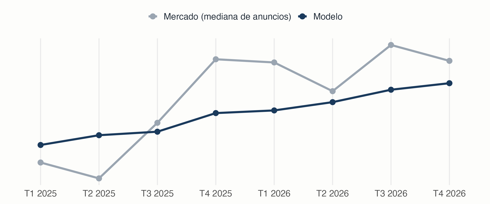
Una vivienda real. Sin euros, sin zona.
Error real
En una tabla, las filas cambiaron de orden.
Los totales de Andalucía no cuadraban.
El código compilaba.
El informe era bonito.
El número estaba mal.
Nadie de negocio lo habría notado.
Decidir qué se calcula, con qué método y con qué supuestos.
Comprobar que el resultado es correcto.
La IA subió el suelo en la parte que odiaba —la segunda versión del documento, la que antes no se hacía— y no tocó el techo.
Un simulador de encuestas electorales
¿Por qué dos encuestas honestas y bien hechas dan resultados distintos?
Es de las cosas más difíciles de enseñar con palabras.
Y de las más fáciles de enseñar con una barra que se mueve.
Que quede claro
La app muestrea correctamente. Es una herramienta docente que funciona.
El error que os enseñaré no está en el muestreo.
Toda la carpintería de Shiny: reactividad, layout, sliders, gráficos, el pulido.
Horas de trabajo que no son estadística.
Y que son exactamente la razón por la que muchos docentes nunca llegan a construir su material interactivo.
La barrera para que un profesor tenga
su propio simulador acaba de desaparecer
Tres ejemplos
500 encuestas simuladas sobre la misma población. Estimación del PP.
n = 400
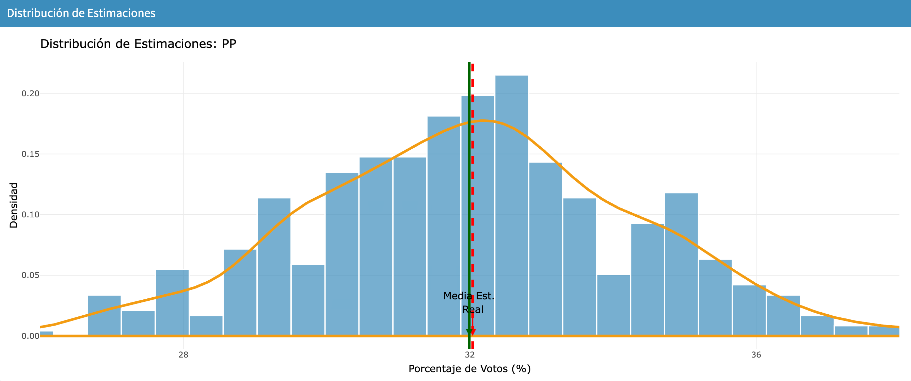
n = 4.000
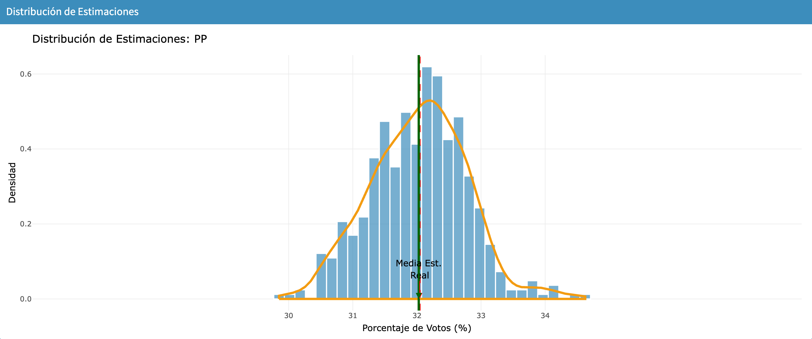
10 veces más entrevistas. La dispersión solo baja a la tercera parte.
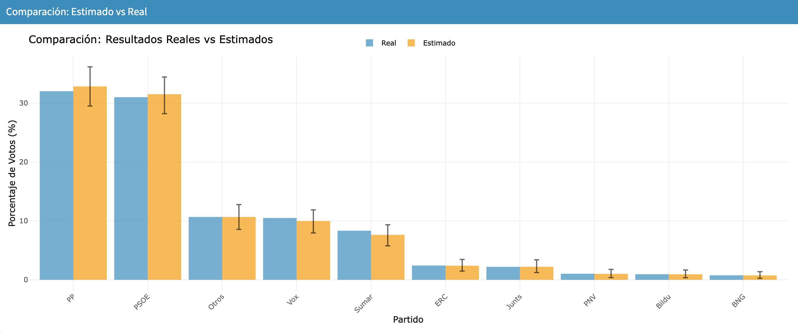
El muestreo es correcto. La realidad no ha cambiado. Y la estimación se mueve.
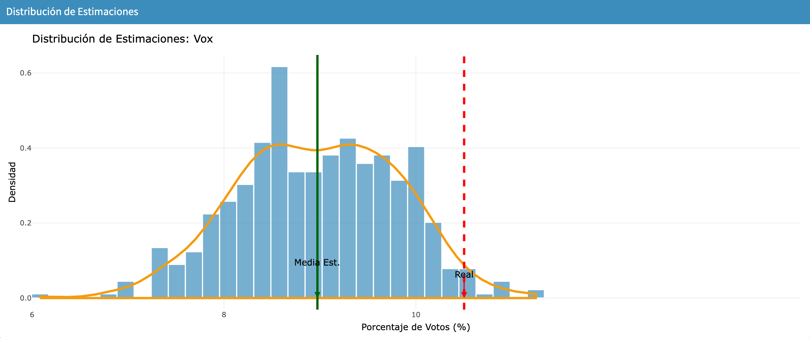
Casi todas las encuestas se quedan por debajo del valor real.
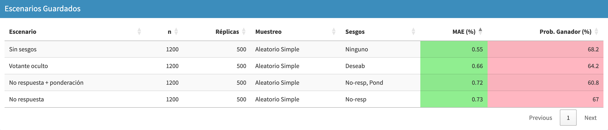
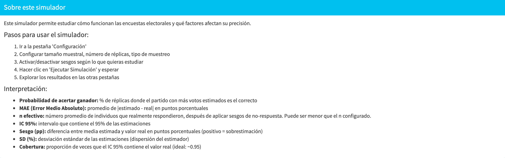
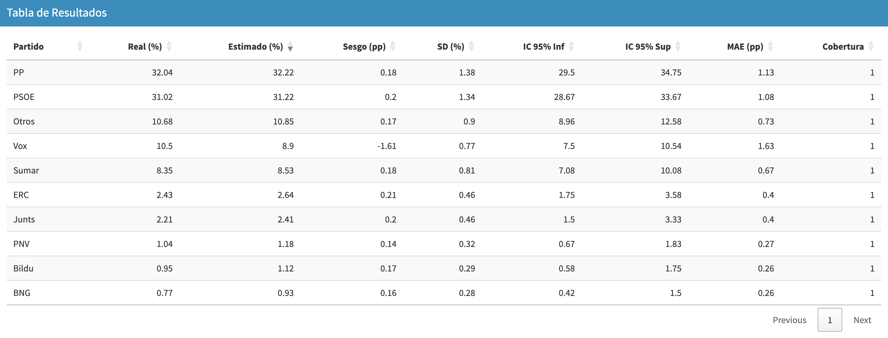
Vox: sesgo de −1,6 puntos y cobertura 1. Eso no puede ser.
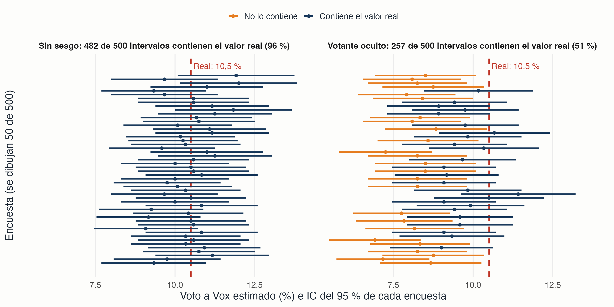
Un intervalo por encuesta. Cuento cuántos tocan el valor real.
Donde de verdad se decide el titular: ponderar y modelizar.
MRP con varias encuestas (I): nueve encuestas y una tabla de postestratificación
| Periodo | Posts en el blog |
|---|---|
| Enero a septiembre de 2026 (9 meses) | 7 |
| Octubre de 2026 (1 mes) | 7 |
Meta-análisis, escaños, MRP, modelo bayesiano completo. Todos con IA.
¿Es la IA o son las generales del 29-N?
Soy estadístico: no puedo separar los dos efectos.
El muestreo estaba bien. El error estaba en una definición que sonaba perfecta.
Qué sesgos merece la pena simular. Cómo se formalizan. Qué tiene que ver el alumno en pantalla para que le haga clic.
Eso no sale de un modelo. Sale de haber analizado encuestas y de haber intentado explicárselas a alguien.
La IA construye el simulador.
Lo que simular, lo pones tú.
Mis datos de natación del Garmin Enlace
Años de sesiones de natación registradas por el reloj.
Nunca las había analizado en serio.
No le importa a nadie. No lo paga nadie. No cabe en un fin de semana.
Y ese es justamente el argumento.
Descarga, limpieza de los datos del Garmin, exploración, gráficos. Y un panel.
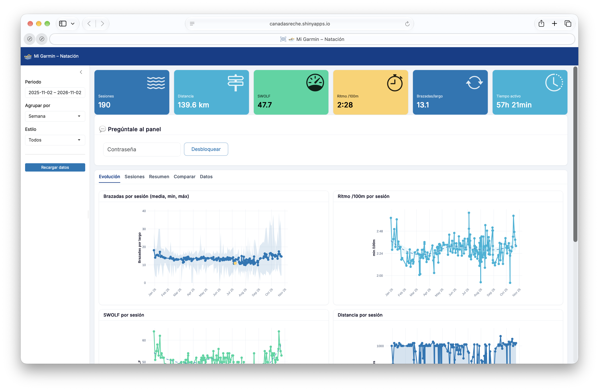
Este es el caso donde el suelo sube más
Un análisis que no se habría hecho jamás, ahora existe.
No porque sea difícil: porque nunca habría merecido las horas.
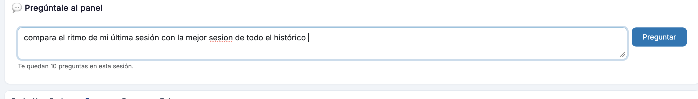
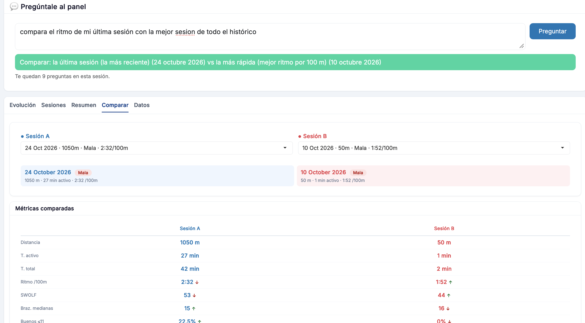
El panel contestó exactamente lo que le pregunté.
| Última sesión | “La mejor” | |
|---|---|---|
| Fecha | 24 oct 2026 | 10 oct 2026 |
| Distancia | 1050 m | 50 m |
| Tiempo activo | 27 min | 1 min |
| Ritmo | 2:32 /100 m | 1:52 /100 m |
La “mejor sesión” es un largo. Comparo un esprint con una sesión entera.
La pregunta buena era otra: la mejor sesión de más de 1000 m.
La respuesta llegó en diez segundos.
La pregunta la puse yo.
Un modelo te ayuda con la segunda —si tú ya la sabes plantear.
La primera y la tercera son enteramente tuyas.
La IA sube el suelo.
El techo lo sigues poniendo tú.
Por eso hay que seguir
enseñando estadística
Si la carpintería la hace la máquina, lo único que te distingue es el criterio.
Que es lo que se enseña aquí.
José Luis Cañadas Reche
idealista · Senior Data Scientist
Blog: muestrear-no-es-pecado.es
GitHub: github.com/joscani
Bluesky: @joscani.muestrear-no-es-pecado.es
Mastodon: @joscani@fosstodon.org
X: @joscani
Diapositivas: github.com/joscani/charla_siguenza
6R4EDI · Sigüenza